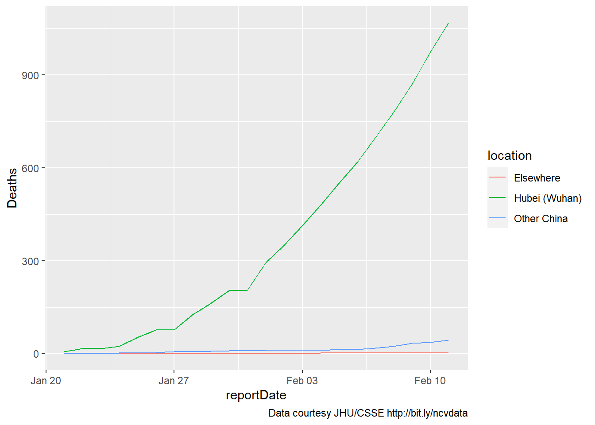
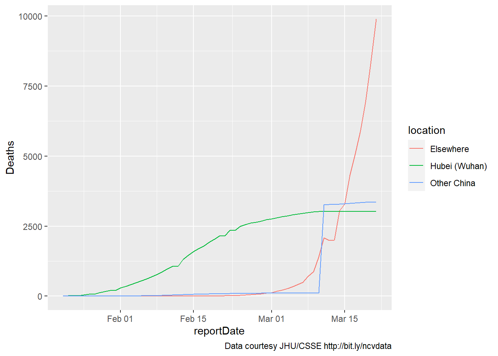
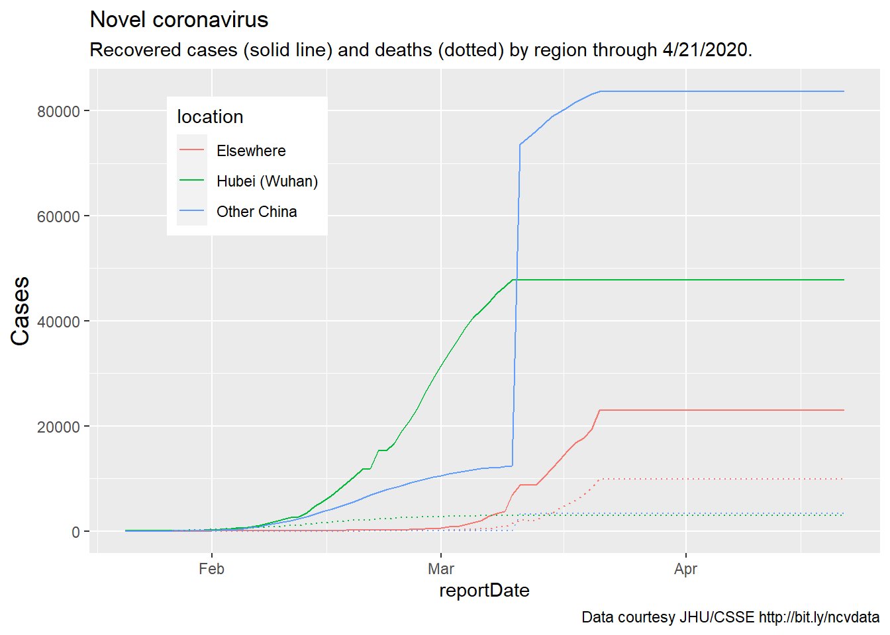
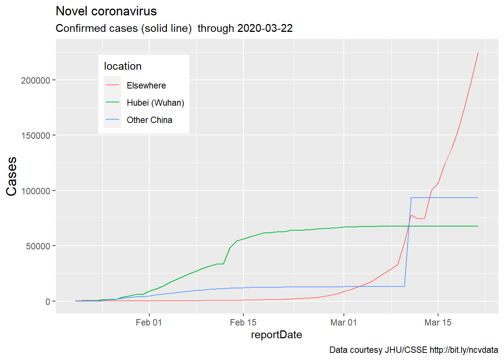

8 examining local COVID data in R
In Winter 2020, as the COVID-19 pandemic began to take hold, I began chronicling the course of the virus. What follows is an archive, followed by a consideration of some possible new directions.
8.1 tracking the Novel Coronavirus (from Feb 2020)
Here, I want to consider a timely (but challenging) dataset.
The Novel Coronavirus is an emerging health crisis, particularly in Wuhan (a Chinese city larger than New York City) and the surrounding province of Hubei. It is not yet a threat in the United States - there have, at this writing (02/11/20) been zero cases in Florida. Still, tracking the spread of the virus - the unfolding number of people infected and recovered, as well as the number of deaths - is a fascinating exercise.
This is an educational script for students learning R with the Tidyverse. It reads data provided by the Johns Hopkins Center for Systems Science and Engineering (JHU/CSSE).
It was modified February 3 because of a new GoogleSheet link and altered variable names, on Feb 5 because of a new URL for the data and additional changes in the variable name for date, and Feb 7 to (a) remove need for OAuth and (b) separate Wuhan from ‘other China.’ On Feb 9, additional data cleaning was performed and interactive plots were added. On February 11, the code was rewritten to read files from a Github repo rather than Google Sheets. Consequently, this does not use an API or require authorization from Github.
library(tidyverse)
library(magrittr)
library(lubridate)
library(htmlwidgets)
library(httr)
library(purrr)
# get list of files
filelist <- GET("https://api.github.com/repos/CSSEGISandData/2019-nCoV/git/trees/master?recursive=1") %>%
content() %>%
# there is probably a more efficient way to reduce this
# list to a set of filenames
flatten() %>%
map ("path") %>%
flatten() %>%
tibble() %>%
rename(filename = 1) %>%
filter(str_detect(filename,".csv") &
str_detect(filename,"daily"))
nsheets <- nrow(filelist)
rawGitFiles <- "https://raw.githubusercontent.com/CSSEGISandData/2019-nCoV/master/"8.1.1 reading the data (Feb 2020)
The Novel Coronavirus data consists of a series of csv files in a Github repository. This combines them into a single sheet in R.
# variables to retain or create
numvars <- c("Confirmed", "Deaths", "Recovered")
varlist <- c("Province/State", "Country/Region",
"Last Update", numvars)
# one cool trick to initialize a tibble
coronaData <- varlist %>%
map_dfr( ~tibble(!!.x := logical() ) )
# add data from files to tibble
for (i in 1:nsheets) {
j <- read_csv(paste0(rawGitFiles,filelist$filename[i]))
# if a variable doesn't exist in sheet, add it
j[setdiff(varlist,names(j))] <- NA
# datetime is formatted inconsistently
# across files, this must be done before merging
j %<>% mutate(`Last Update` =
parse_date_time(`Last Update`,
c('mdy hp','mdy HM',
'mdy HMS','ymd HMS'))) %>%
select(varlist)
coronaData <- rbind(coronaData, j)
}
head(coronaData)## # A tibble: 6 x 6
## `Province/State` `Country/Region` `Last Update` Confirmed Deaths
## <chr> <chr> <dttm> <dbl> <dbl>
## 1 Anhui Mainland China 2020-01-21 22:00:00 NA NA
## 2 Beijing Mainland China 2020-01-21 22:00:00 10 NA
## 3 Chongqing Mainland China 2020-01-21 22:00:00 5 NA
## 4 Guangdong Mainland China 2020-01-21 22:00:00 17 NA
## 5 Guangxi Mainland China 2020-01-21 22:00:00 NA NA
## 6 Guizhou Mainland China 2020-01-21 22:00:00 NA NA
## # ... with 1 more variable: Recovered <dbl>str(coronaData)## tibble [1,210,334 x 6] (S3: tbl_df/tbl/data.frame)
## $ Province/State: chr [1:1210334] "Anhui" "Beijing" "Chongqing" "Guangdong" ...
## $ Country/Region: chr [1:1210334] "Mainland China" "Mainland China" "Mainland China" "Mainland China" ...
## $ Last Update : POSIXct[1:1210334], format: "2020-01-21 22:00:00" "2020-01-21 22:00:00" ...
## $ Confirmed : num [1:1210334] NA 10 5 17 NA NA NA NA 1 NA ...
## $ Deaths : num [1:1210334] NA NA NA NA NA NA NA NA NA NA ...
## $ Recovered : num [1:1210334] NA NA NA NA NA NA NA NA NA NA ...8.1.2 cleaning (wrangling, munging) the data (Feb 2020)
Cleaning the data includes not just finding “errors,” but adapting it for our own use. It’s generally time consuming, as was the case here. The following letters refer to sections of the code below.
- a - fix a few missing values outside of China for province and country
- b - the earliest cases, all in China, did not include country
- c - because province/state is included inconsistently, an unambiguous place variable is created
- d - reportdate is standardized (above) and renamed
- e - in some cases, multiple reports are issued for each day. only the last of these is used for each place.
- f - for dates where no data was supplied, the most recent (previous) data are used
- g - values of NA for Deaths, Confirmed, and Recovered cases are replaced by zero.
- h - Prior to Feb 1, 2020 reporting for US included only state, since then, city and state. This drops the (duplicated) province/state-only values beginning Feb 1.
coronaData <- coronaData %>%
# a
mutate (`Province/State` = case_when(
(is.na(`Province/State`) &
(`Country/Region` == "Australia")) ~ "New South Wales",
(is.na(`Province/State`) &
(`Country/Region` == "Germany")) ~ "Bavaria",
TRUE ~ `Province/State`)) %>%
mutate (`Country/Region` = case_when(
`Province/State` == "Hong Kong" ~ "Hong Kong",
`Province/State` == "Taiwan" ~ "Taiwan",
`Province/State` == "Washington" ~ "US",
# b
is.na (`Country/Region`) ~ "Mainland China",
TRUE ~ `Country/Region`)) %>%
# c
mutate(place = ifelse(is.na(`Province/State`),
`Country/Region`,
paste0(`Province/State`,", ",
`Country/Region`))) %>%
mutate(reportDate =
date(`Last Update`)) %>%
group_by(place,reportDate) %>%
# e
slice(which.max(`Last Update`)) %>%
ungroup() %>%
# fill in missing dates for each place for time series
# f
group_by(place) %>%
complete(reportDate = seq.Date(min(reportDate),
today(),
by="day")) %>%
fill(c(Confirmed,Deaths,Recovered,
`Country/Region`,`Province/State`)) %>%
# g
ungroup() %>%
mutate_if(is.numeric, ~replace_na(., 0)) %>%
# h
mutate(dropcase = ((!str_detect(`Province/State`,",")) &
(reportDate > "2020-01-31") &
(`Country/Region` == "Canada" | `Country/Region` == "US"))) %>%
# dplyr called explicitly here because plotly has taken over 'filter'
dplyr::filter (!dropcase) %>%
select(-c(`Last Update`,`Province/State`,`Country/Region`,dropcase))
head(coronaData)## # A tibble: 6 x 5
## place reportDate Confirmed Deaths Recovered
## <chr> <date> <dbl> <dbl> <dbl>
## 1 Afghanistan 2020-02-24 1 0 0
## 2 Afghanistan 2020-02-25 1 0 0
## 3 Afghanistan 2020-02-26 1 0 0
## 4 Afghanistan 2020-02-27 1 0 0
## 5 Afghanistan 2020-02-28 1 0 0
## 6 Afghanistan 2020-02-29 1 0 08.1.3 eleven months later: the code still runs!
The above code runs without apparent error, and leads to a dataset of 149341 rows by 5 columns. Here’s a quick peek (Note that I use the group_by and summarize functions to collapse the file to one line per date):
coronaData %>% group_by(reportDate) %>%
summarize(Confirmed = sum(Confirmed)) %>%
head() ## # A tibble: 6 x 2
## reportDate Confirmed
## <date> <dbl>
## 1 2020-01-21 332
## 2 2020-01-22 557
## 3 2020-01-23 654
## 4 2020-01-24 941
## 5 2020-01-25 1771
## 6 2020-01-26 27958.1.4 shall we graph it? (Feb 2021)
So far, so good. Let’s plot the whole range. What do we see? This will generate a quick graph in ggPlot which shows the global incidence of confirmed cases.
coronaData %>%
group_by(reportDate) %>%
summarize(Confirmed = sum(Confirmed)) %>%
ggplot(aes(x=reportDate)) +
geom_line(aes(y=Confirmed)) 
8.1.5 too bad
According to the above graph, there have been no additional COVID cases since mid-March or so. Too bad that the data aren’t right here - for us and especially the world.
Exercise 8_1 How would we find the exact date when the file stopped updating? In class, we’ll consider this question (we’ll use pre-downloaded data to save time and computer resources). Use whatever method you like for this - kludgy or clever - but you should describe your results in explicit language or code so that anyone else would get the same results.
8.1.6 what now?
I want to make sure that the rest of my code still works, so I’ll look more closely at the valid data. I’ll generate a new variable (‘firstbaddate,’ which sounds like a corny romcom), and filter by it.
When the code was written a year ago, the COVID outbreak was largely contained to the Hubei province (which includes the city of Wuhan). So I tried breaking down the data into three locations, breaking down China into Hubei, other China, and the rest of the world.
And I generated summaries for three measures - Confirmed, Deaths, and Recovered cases
firstbaddate <- '2020-03-22' # This line is added in 2021
coronaDataSimple <- coronaData %>%
filter(reportDate < firstbaddate) %>% # added in 2021
mutate(country = case_when(
str_detect(place,"China") ~ "China",
TRUE ~ "Other countries")) %>%
mutate(location = case_when(
place == "Hubei, Mainland China" ~ "Hubei (Wuhan)",
country == "China" ~ "Other China",
# what happens when this line is not commented out?
# why is it written this way?
# str_detect(place, "ruise") ~ "Cruise Ship",
TRUE ~ "Elsewhere")) %>%
group_by(location,reportDate) %>%
summarize(Confirmed = sum(Confirmed),
Deaths = sum(Deaths),
Recovered = sum(Recovered)) %>%
ungroup()## `summarise()` has grouped output by 'location'. You can override using the `.groups` argument.8.1.7 an initial plot (Feb 2020)
The first plot is simple, including data for only deaths. A caption is added to show the source of the data. Here’s what the data looked like last February 11:
myCaption <- " Data courtesy JHU/CSSE http://bit.ly/ncvdata"
oldData <- coronaDataSimple %>%
filter(reportDate < '2020-02-12')
coronaPlot0 <- oldData %>%
# filter(reportDate < '2020-02-12')
ggplot(aes(x=reportDate)) +
geom_line(aes(y=Deaths, color = location)) +
labs(caption = myCaption)
coronaPlot0
8.1.8 five weeks later (Mar 2020)
About five weeks later our data would stop updating. But the world had already changed: Here’s the same graph, through March 21, 2020:
coronaPlot0 <- coronaDataSimple %>%
ggplot(aes(x=reportDate)) +
geom_line(aes(y=Deaths, color = location)) +
labs(caption = myCaption)
coronaPlot0
It’s apparent that the coding for Wuhan versus the rest of China is off for some of the newer data, as one of these increases while the other reaches a plateau. Still, the overall picture is clear.
8.1.9 adding recovered cases (code from Feb, data through Mar 2020)
Similar results are obtained if we examine two other populations of interest, recovered and confirmed cases. Here, recovered cases and deaths are included on a single plot, as these are roughly on the same scale. Additional changes to the graph are self-evident.
mySubtitle <- paste0(
"Recovered cases (solid line) and deaths (dotted) by region through ",
firstbaddate)
# (month(today())), "/",
# (day(today())),"/",
# (year(today())),".")
myCaption <- " Data courtesy JHU/CSSE http://bit.ly/ncvdata"
coronaPlot1 <- coronaDataSimple %>%
ggplot(aes(x=reportDate)) +
geom_line(aes(y=Recovered,
color = location),
linetype = "solid") +
geom_line(aes(y=Deaths,
color = location),
linetype = "dotted") +
theme(axis.title.y =
element_text(angle = 90,
vjust = 1,size = 14),
legend.position = (c(.2,.8))) +
labs(title = "Novel coronavirus",
subtitle = mySubtitle,
y = "Cases",
caption = myCaption)
coronaPlot1
8.2 plotting confirmed cases (Feb-Mar 2020)
Finally, confirmed cases are plotted on a different scale:
mySubtitle <- paste0(
"Confirmed cases (solid line) through ",
firstbaddate)
# (month(today())), "/",
# (day(today())),"/",
# (year(today())),".")
myCaption <- " Data courtesy JHU/CSSE http://bit.ly/ncvdata"
coronaPlot1 <- coronaDataSimple %>%
ggplot(aes(x=reportDate)) +
geom_line(aes(y=Confirmed,
color = location),
linetype = "solid") +
theme(axis.title.y =
element_text(angle = 90,
vjust = 1,size = 14),
legend.position = (c(.2,.8))) +
labs(title = "Novel coronavirus",
subtitle = mySubtitle,
y = "Cases",
caption = myCaption)
coronaPlot1
8.3 status (Feb 2021)
The code above works ok, but the March 2020 data need further cleaning, and no new data have been added in 11 months. In that time, as the pandemic has spread, numerous other resources for tracking COVID have been developed, most of which are far more sophisticated and less cumbersome than the code above.
There are new datasets, new R packages, and, perhaps most importantly, new questions that we might consider about variables such as vaccination rates, test-positivity rates, and hospital capacity.
8.3.1 an assignment
for Wednesday, please study and be prepared to report on at least one of the following packages for studying COVID data using R:
If the last digit of your Z number is 1 or 2, begin with covid19datahub/COVID19: Unified dataset for a better understanding of COVID-19 (github.com)
If the last digit of your Z number is 3 or 4, begin with aedobbyn/covid19us: R package for the COVID Tracking Project API providing US COVID-19 data (github.com)
If the last digit of your Z number is 5 or 6, begin with RamiKrispin/coronavirus: The coronavirus dataset (github.com)
If the last digit of your Z number is 7 or 8, begin with Covid19R/covid19nytimes: Pulls the covid-19 data from the New York Times Public Data Source (github.com)
If the last digit of your Z number is 9 or 0, begin with joachim-gassen/tidycovid19: {tidycovid19}: An R Package to Download, Tidy and Visualize Covid-19 Related Data (github.com)
Review the GitHub page, especially the README.md section to get a sense of what is available in the data. How current is it (when was the code last modified?). How popular is it (look at the number of ‘watches’ ‘stars’ and ‘forks’ in the upper right hand corner of the webpage)? How buggy is it (look at the ‘issues’ tab, then look at ‘Open’ and ‘Closed’ issues? Is it worth looking further at this library)?
If you get this far, consider looking at a second package, Googling ‘R COVID data’, and/or installing and playing with a package on your home machine. We’ll discuss your findings and work together on this in class on Wednesday.
8.4 how to create new knowledge
One thing to keep in mind as we move forward is that, despite the fact that hundreds if not thousands of statisticians, data scientists, epidemiologists, policy makers, and journalists have looked at COVID data, there are still unanswered questions.
For example, here in Florida, there was recently some controversy as the Governor chose to disperse COVID vaccinations at Publix pharmacies; the controversy arose, in large part, because poorer communities (including those in the Western part of Palm Beach County) appear less likely to have a Publix supermarket. Is it the case that there is a relationship between COVID disease rates and the number of Publix/per capita by city or zip code (Florida data by Zip code is available at https://covid19-usflibrary.hub.arcgis.com/datasets/)??) If so, what would this tell us?
In data science, we can often create new knowledge by putting together two data sources which haven’t been combined before, together with an interesting and potentially important question.